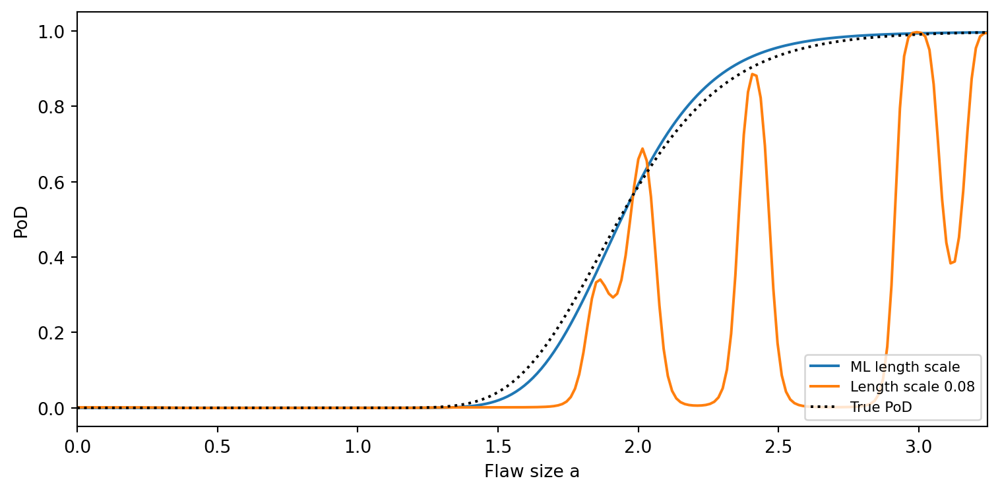

Kriging (Gaussian Process regression) is one of the candidate expectation models in digiqual. It competes with polynomials of degree 1–10 to describe how the mean signal response changes with the inputs. This page explains exactly how the Kriging candidate is built, how it is chosen (or not), how it feeds the PoD calculation, and where it can mislead you.
Where each piece comes from
digiqual follows two papers and the toolbox they used. Each design choice on this page carries a tag showing its source:
Tag
Source
M25
Malkiel, Croxford & Wilcox (2025). A generalized method for the reliability assessment of safety–critical inspection. Proc. R. Soc. A 481: 20240654. doi:10.1098/rspa.2024.0654. Includes its MATLAB reference code.
M26
Malkiel, Croxford & Wilcox (2026). A comprehensive investigation of flexible and multi-dimensional simulation-based PoD analysis. NDT&E Int. 159: 103596. doi:10.1016/j.ndteint.2025.103596.
UQLab
A default of the UQLab Kriging module (v2.1). Both papers built their Kriging models with UQLab and its default settings, so these choices are inherited rather than stated in the papers.
M25 supplies the overall framework. It covers the candidate pool, 10-fold cross-validation, the kernel-smoothed variance model, distribution inference and bootstrap confidence bounds. In that paper Kriging is one candidate in the pool (its Fig. 5).
M26 supplies the Kriging-specific machinery. It covers the GP formulation, choosing the correlation function by leave-one-out (LOO) error, and checking the Kriging uncertainty with standardised LOO residuals.
The first term is the trend, \(\sigma^2\) is the process variance and \(R\) is a correlation function controlled by the length scales \(\boldsymbol{\theta}\). M26 uses ordinary Kriging, where the trend is one unknown constant \(\beta_0\).
In digiqual. The response is standardised, \(\tilde{y} = (y - \bar{y})/s_y\), and a zero-mean GP is fitted to \(\tilde{y}\). This is simple Kriging with the trend fixed at the sample mean \(\bar{y}\)digiqual, because scikit-learn’s Gaussian Process has no estimated trend. Near the data the two are practically identical. Far from the data the prediction returns to \(\bar{y}\) rather than to the GLS estimate \(\hat\beta_0\) (Eq. 6 of M26). For a constant trend these are usually close.
1.2 Distance and correlation functions
Each input is first standardised with the mean and standard deviation of the training data UQLab:
\[ u_j = \frac{x_j - \bar{x}_j}{s_{x_j}} \]
The correlation then depends on an anisotropic distance with one length scale per input M26 (Eq. 5; UQLab Corr.Type = 'Ellipsoidal'):
Because \(\mathbf{u}\) is dimensionless, every \(\theta_j\) is measured in standard deviations of input \(j\). A length scale of 1 means the correlation decays over about one standard deviation of that input. That holds whether the input was recorded in metres, millimetres or degrees.
The four candidate correlation functions M26 (§4.3.1) are:
M26 also tried UQLab’s “linear” correlation. digiqual omits it digiqual because scikit-learn does not provide it, and in M26 the Matérn functions consistently beat it.
1.3 Noise (nugget)
M26 studies deterministic simulations, where the same inputs always give the same output, so its Kriging model interpolates every training point exactly. digiqual is used on data where that is often false. Any influential input you did not include (crack roughness, shape, a random noise realisation) shows up as scatter. Following the M25 reference code (UQLab option Regression.SigmaNSQ = 'auto'), every candidate therefore includes a learned white-noise variance \(\tau^2\):
When the data really are deterministic, maximum likelihood drives \(\tau^2\) towards its lower bound and the model reverts to the interpolating Kriging of M26.
ImportantWhy the noise must be learned
If \(\tau^2\) is fixed below the true scatter variance, the likelihood “explains” the scatter by shrinking a length scale until the surface threads through individual points. This usually happens to a weakly influential input. The result:
an excellent in-sample fit but a poor leave-one-out fit;
slices at a fixed value of that input that sag back towards \(\bar{y}\) between data points;
unstable bootstrap refits, which fail the convergence check.
With \(\tau^2\) learned, the scatter is attributed to noise and the length scales stay physically sensible. Inputs with no influence get length scales far longer than their range.
1.4 Estimating the hyperparameters
For a given correlation function, the hyperparameters \((\sigma^2, \boldsymbol{\theta}, \tau^2)\) are chosen by maximising the log-likelihood of the standardised training responses M26 (§2.1.2):
In the noise-free ordinary-Kriging case of M26, \(\beta_0\) and \(\sigma^2\) have closed forms (Eq. 6–7), leaving only \(\boldsymbol{\theta}\) to optimise numerically:
With a nugget, digiqual optimises \(\sigma^2\), \(\boldsymbol{\theta}\) and \(\tau^2\) together, in log space, with L-BFGS-B started from the default values and then from 10 random points inside the bounds digiqual. UQLab uses a hybrid genetic algorithm instead.
NotePaper vs toolbox
M26 states that the hyperparameters come from the log-likelihood. UQLab’s default estimation method is in fact leave-one-out cross-validation (EstimMethod = 'CV'), and the M25 reference code does not override it. digiqual follows the paper’s description (maximum likelihood).
Hyperparameter
Initial value
Bounds
Units
Source
Length scale \(\theta_j\)
1
\([10^{-3},\,10^{3}]\)
std. devs of input \(j\)
start and lower bound UQLab; upper bound digiqual
Process variance \(\sigma^2\)
1
\([10^{-5},\,10^{6}]\)
\(\text{var}(y)\)
digiqual
Noise variance \(\tau^2\)
0.1
\([10^{-8},\,10]\)
\(\text{var}(y)\)
digiqual
Numerical jitter
\(10^{-10}\)
fixed
\(\text{var}(y)\)
UQLab (Corr.Nugget)
UQLab caps the length scale at 10. digiqual allows up to \(10^{3}\) so that an input with no influence can become effectively flat instead of sitting on the bound.
1.5 Predicting
Conditioning the prior on the data gives the posterior mean and variance at a new point \(\mathbf{x}_0\). In the standardised units used by digiqual (simple Kriging):
where \(\mathbf{k}_0\) holds the covariances \(\sigma^2 R(\mathbf{u}_0, \mathbf{u}_i)\) between the new point and the training points. Eq. 8–9 of M26 are the ordinary-Kriging versions. They contain one extra variance term for the uncertainty in \(\hat\beta\), which only matters far from the data.
Only \(\mu(\mathbf{x})\) is used for the PoD in digiqual. The spread of the response around it comes from the separate variance model (Section 4).
2 Choosing the kernel and the model
2.1 Choosing the correlation function: LOO error
Each of the four candidates is fitted once to all the data. Its leave-one-out predictions then come from a single matrix inverse, without refitting M26 (Eq. 10–13, after Dubrule 1983). Build the augmented matrix
As in M26, the hyperparameters are those fitted to the full data and are not re-optimised for each left-out point. Because \(\mathbf{K}\) includes \(\tau^2\), \(\sigma^2_{\hat{Y}_{-i}}\) is the variance of a new noisy observation, which is the right scale for comparing with observed residuals. UQLab computes the same quantities in uq_Kriging_calc_KFoldUQLab.
Note
These LOO formulas are the ordinary-Kriging ones (the \(\mathbf{F}\) row and column re-estimate the constant trend without point \(i\)), whereas digiqual’s predictions use the sample mean (Section 1.1). The test suite checks that the matrix formula reproduces an explicit ordinary-Kriging refit to machine precision. The gap between the two trend treatments is negligible for LOO purposes.
The kernel with the smallest normalised LOO error is kept M26 (Eq. 14):
\(MSE_{LOO} = 1\) means the model predicts left-out points no better than the sample mean. The scores of all four kernels are stored on the model as kernel_loo_scores_.
2.2 Kriging against the polynomials
LOO error with fixed hyperparameters is ideal for comparing kernels, but it is not on the same footing as the polynomials’ scores. The chosen kernel is therefore also scored by the same 10-fold cross-validation as every polynomial, with its hyperparameters re-optimised inside each fold M25. This is the Kriging bar in the model-selection chart.
The overall winner is then picked by the one-standard-error rule digiqual: the simplest model whose CV error is within one standard error of the best, with Kriging counted as the most complex candidate. Kriging is therefore chosen only when it is clearly better than every polynomial. The rule, its link to M25 Fig. 5, and a worked example are on the Generalised PoD page.
2.3 Cost
Kriging needs an \(O(N^3)\) factorisation for every likelihood evaluation. One full model build costs 4 kernels × 11 optimiser starts, plus 10 CV folds × 6 starts. Above \(N = 1000\) samples Kriging is skipped and only the polynomials are fitted digiqual.
3 LOO residual diagnostics and γ
To judge whether the Kriging uncertainty estimate can be trusted, M26 (Eq. 19) standardises each LOO error by its predicted standard deviation:
If the model’s uncertainty is right, the \(e_i\) behave roughly like draws from \(\mathcal{N}(0,1)\). Values outside \([-3, 3]\) flag regions where the model is over-confident. M26 (§2.2.5.2) defines the factor
and multiplies the Kriging interpolation standard deviation by \(\gamma\), which puts the worst residual exactly on the \(\pm 3\) line (Fig. 10b of that paper). It then draws posterior GP sample paths with this inflated uncertainty to build a conservative 95 % bound on the PoD. The PoD curve itself does not change.
In digiqual, \(\gamma\) is a diagnostic onlydigiqual. It is stored as outlier_scale_factor_ and shown in the Kriging diagnostics plot, where the green crosses are \(e_i/\gamma\), as on Fig. 10b’s right-hand axis. It is not applied to the PoD, for three reasons:
digiqual builds its PoD bounds by the M25 bootstrap, not by GP sample paths, so there is no interpolation-uncertainty term for \(\gamma\) to scale.
Applying \(\gamma\) to the response scatter instead would change the PoD curve itself, which M26 never does. Wider scatter also raises the PoD wherever the mean response is below the threshold, so that change is not conservative for small flaws.
The nugget \(\tau^2\) is one value for the whole input space. When the real scatter varies with flaw size, LOO residuals in high-scatter regions exceed 3 simply because of that. The variance model (Section 4) already handles this heteroscedasticity, so inflating by \(\gamma\) as well would count it twice.
A large \(\gamma\) is still worth acting on: look for a missing input, a transformation (e.g. \(\log a\)), more samples, or a polynomial instead. GP-sample-path bounds in the style of M26 are a possible future addition.
4 Variance model and bootstrap with Kriging
Variance model. The scatter around the mean is modelled by the Gaussian kernel smoother of M25 (Eq. 2.9–2.11), applied to squared residuals. For polynomials those residuals are the usual in-sample ones. For Kriging they are the LOO residuals\(y_i - \mu_{\hat{Y}_{-i}}\)digiqual. A Kriging model with a learned nugget still bends towards each training point, so its in-sample residuals understate the scatter. That would give too narrow a response distribution and a PoD curve that is too steep. LOO residuals measure how far an observation falls from a prediction that did not use it. The same residuals are used to infer the error distribution (M25 §2f).
Bootstrap.M25 (§2i) refits the chosen model to each resample of the data, keeping the model type and distribution family fixed. For Kriging, digiqual also keeps the hyperparameters (\(\sigma^2\), \(\boldsymbol{\theta}\), \(\tau^2\)) and the input scaling at their full-data values. Only the posterior is recomputed, which keeps 1000 refits fast digiqual. The resulting interval reflects the sampling variability of the data, but not uncertainty in the hyperparameters, so it may be somewhat narrow when the length scales are poorly determined (see the pitfalls below). In each resample the variance-model residuals are again leave-out residuals. All copies of a duplicated point are left out together, using the block form of the LOO formula UQLab.
5 Correlation length and other pitfalls (Kriging vs polynomials)
Polynomials are global: every data point influences the whole curve, and the shape is fixed by the degree. Kriging is local: a prediction is a weighted blend of nearby observations, and the length scale \(\theta\) decides what “nearby” means. That locality is why Kriging can follow features a low-order polynomial smooths over (M25 Fig. 6). It is also the source of most Kriging failures.
5.1 The length scale must be longer than the gap between samples
Away from the data, the correlation with every observation decays to zero and the Kriging mean falls back to the prior mean \(\bar{y}\). If \(\theta\) is shorter than the typical spacing between samples, this happens between data points. The surface becomes a row of bumps on a flat sheet at \(\bar{y}\).
(a) Mean response. The ML length scale gives a smooth fit; the short length scale collapses to the mean between points. Grey: outside the data, Kriging decays slowly towards the mean while the cubic polynomial runs away.

(b) The same failure seen in a PoD calculation: with the short length scale the PoD dips between samples.
Figure 1: Sparse data (10 points) from a saturating response, fitted with the length scale chosen by maximum likelihood and with a length scale shorter than the sample spacing.
Maximum likelihood normally avoids this, as in Figure 1 (a), where the fitted length scale is roughly ten times the mean spacing. It goes wrong in three situations:
Fixed or under-estimated noise. This is the callout in Section 1.3. A length scale collapses onto the scatter.
Sparse sampling in one direction. With \(n\) inputs, \(N\) samples are only about \(N^{1/n}\) per axis. M26 needed 700 points in 4-D, about 5 per axis. The data cannot tell a short length scale apart from a long one along a sparsely sampled direction, so the likelihood is flat there and the estimate is unreliable.
Slices through empty regions. A PoD slice holds unused inputs at their median. If few samples lie near that median for a short-length-scale input, the slice is mostly prior mean.
What to check. Compare each fitted length scale (model.kernel_, in standard deviations of that input) with the sample spacing along that input. A length scale near its lower bound (\(10^{-3}\)) is a red flag. A length scale near the upper bound means that input has essentially no effect.
5.2 Sparse, uncorrelated (scattered) data
When the signal is weak compared with the scatter, or there are few points, the GP may find no correlation structure at all. The likelihood then puts all the variance in the nugget, pushes \(\theta\) to its lower bound and leaves a flat line at \(\bar{y}\), so the trend disappears.
Figure 2: 15 points with a weak trend buried in scatter. Kriging attributes everything to noise and predicts a constant; its LOO error is above 1 (worse than the mean). A straight line keeps the trend.
Fitted kernel: 0.0754**2 * Matern(length_scale=0.001, nu=0.5) + WhiteKernel(noise_level=0.994)
Best kernel LOO error (MSE_LOO): 1.15
Selected model: ('Polynomial', 1)
Polynomials degrade more gracefully here, because a straight line through scattered points still estimates the slope. The model selection usually catches this case: the Kriging CV error is no better than a low-order polynomial’s, so the one-SE rule picks the polynomial. Signs to look for are \(MSE_{LOO} \gtrsim 1\), a nugget close to 1 (in units of \(\text{var}(y)\)), and length scales at their lower bound.
5.3 Extrapolation
Outside the sampled region a Kriging mean decays back to \(\bar{y}\), at a rate set by the length scale (grey region in Figure 1). For a PoD curve that means the mean response at flaw sizes beyond the largest simulated flaw drifts towards the average response, so the PoD can start to fall. Polynomials fail differently: a cubic or higher-order term can make the mean run away to \(\pm\infty\). Neither model should be used outside the sampled range. Keep the PoD evaluation grid inside the range of your simulations.
5.4 Other things to be wary of
In-sample fit says nothing. Kriging can pass (almost) through every training point, so in-sample \(R^2\) is near 1 for any data. Always judge it by CV or LOO error. The GUI’s model-fit diagnostic uses LOO predictions for Kriging for exactly this reason.
One length scale for the whole space (stationarity). A response that rises steeply for small flaws and then saturates has two very different “natural” length scales, and a stationary GP must compromise. Transforming the input (e.g. working in \(\log a\), as M25 §2g recommends) often makes the response closer to stationary.
One noise level for the whole space. The nugget \(\tau^2\) is constant. If the real scatter varies strongly, the Kriging surface may be over-smoothed where the scatter is small and under-smoothed where it is large, and the LOO residuals will flag outliers (\(\gamma > 1\)). The variance model accounts for the varying scatter in the PoD itself.
No equation. A polynomial can be written down and checked by hand. A Kriging model is defined by its training data and hyperparameters, which makes it harder to audit.
Cost and size limit. Fitting is \(O(N^3)\), and Kriging is skipped above 1000 samples.
5.5 Summary: Kriging vs polynomials
Polynomial
Kriging
Shape
Global, fixed by degree
Local, set by length scales
Between samples
Smooth by construction
Smooth only if \(\theta \gtrsim\) sample spacing
Outside the data
Can diverge (high degree)
Decays to \(\bar{y}\)
Sparse or noisy data
Robust, keeps the trend
May collapse to a constant
Sharp local features
Smoothed out (low degree)
Captured if well sampled
Many inputs
Number of terms explodes with degree
One length scale per input
Scatter in the response
Least-squares fit (Ridge)
Learned nugget \(\tau^2\)
Interpretability
Explicit equation
No equation
Cost
Negligible
\(O(N^3)\); \(N \le 1000\)
Deviations from the references
Deviation
Reference
Why digiqual differs
Expected effect
Trend fixed at \(\bar{y}\) (simple Kriging)
M26: GLS-estimated constant
scikit-learn has no estimated trend
Negligible near data; far from data reverts to \(\bar{y}\) instead of \(\hat\beta_0\)
No “linear” correlation family
M26 §4.3.1
Not in scikit-learn; Matérn beat it in M26
None expected
Length-scale upper bound \(10^{3}\)
UQLab: 10
Lets irrelevant inputs become flat
Fewer length scales stuck on a bound
Multi-start L-BFGS-B
UQLab: hybrid GA
scikit-learn optimiser
Same optimum in well-posed problems
ML estimation
UQLab default: LOO-CV
Follows the M26 text
—
One-SE winner rule
M25: qualitative “simplest of the near-best”
A reproducible version of the same idea
Prefers simpler models in near-ties
\(\gamma\) not applied
M26: inflates interpolation std for GP-path bounds
No GP-path bounds in digiqual; applying it to scatter would change the PoD curve and double-count heteroscedasticity (Section 3)
PoD curve and bounds unaffected by \(\gamma\)
LOO residuals for the variance model
M25: in-sample residuals
A nugget GP’s in-sample residuals understate the scatter
Wider, more honest scatter for Kriging
Frozen hyperparameters in the bootstrap
M25: refit each resample
1000 re-optimisations are too slow
Bounds omit hyperparameter uncertainty
Ridge polynomials
M25: ordinary least squares
Stabilises high degrees
Slight shrinkage of high-degree terms
\(N \le 1000\) for Kriging
—
\(O(N^3)\) cost
Polynomials only for large data
6 Python example
import numpy as npimport matplotlib.pyplot as pltfrom digiqual.pod import fit_all_robust_mean_models, compute_kriging_loo_residualsfrom digiqual.plotting import plot_kriging_diagnostics# 1. Synthetic 2D data: flaw length and probe anglerng = np.random.default_rng(42)N =100length = rng.uniform(0.5, 5.0, N)angle = rng.uniform(-15.0, 15.0, N)X = np.column_stack([length, angle])y =2.0* length -0.3* length**2+0.05* angle + rng.normal(0, 0.3, N)y[10] +=3.5# one outlier# 2. Fit the candidate poolmodels, cv_scores, winner = fit_all_robust_mean_models(X, y)gpr = models[("Kriging", None)]print(f"Selected model (one-SE rule): {winner}")print(f"Kernel LOO errors: { {k: round(v, 3) for k, v in gpr.kernel_loo_scores_.items()} }")print(f"Chosen kernel: {gpr.best_kernel_name_}")print(f"Fitted kernel (standardised inputs): {gpr.kernel_}")print(f"Length scales in input units: {np.atleast_1d(gpr.kernel_.k1.k2.length_scale) * gpr.x_std_}")print(f"gamma (diagnostic): {gpr.outlier_scale_factor_:.2f}")# 3. LOO residual diagnosticsloo_means, loo_stds, std_res, gamma = compute_kriging_loo_residuals(gpr, X, y)fig_hist, ax_hist = plt.subplots(figsize=(8, 4))fig_scatter, ax_scatter = plt.subplots(figsize=(8, 4))plot_kriging_diagnostics(std_res, outlier_scale_factor=gamma, best_kernel_name=gpr.best_kernel_name_, ax=(ax_hist, ax_scatter))plt.show()